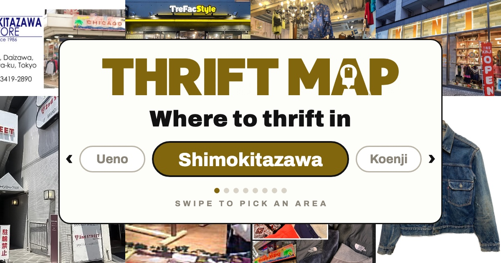
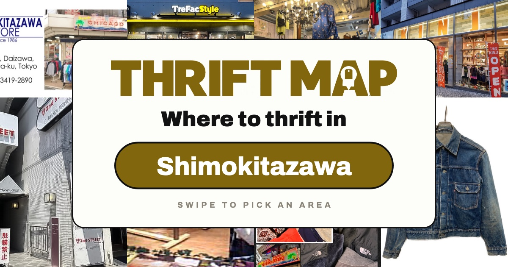

Thrift Map OGP — レイアウト5案
下北沢OGPのレイアウト再設計。中身（写真・ロゴ・文言・エリア名）は全案同一で、配置だけを変えています。全案ともデザイン4原則（近接・整列・反復・対比）で組み直し、ピル内文字の上下余白は実測して中央にそろえました。番号で選んでください。本番の og:image はまだ変更していません。
1中央カード（再構築）
現行構成のまま、余白・整列・角丸を厳密にそろえて組み直した案。
選択ピル「Shimokitazawa」文字の上下余白：上 27px / 下 26px（実測）

2下部シート型
写真を画面いっぱいに見せ、ロゴ・見出し・ピルは下の帯に集約した案。
選択ピル「Shimokitazawa」文字の上下余白：上 26px / 下 25px（実測）

3左寄せエディトリアル
カードを左に寄せ、全要素を左端の軸にそろえた誌面型の案。
選択ピル「Shimokitazawa」文字の上下余白：上 26px / 下 26px（実測）

4ミニマル
ピルを1本に絞り、エリア名を大きく見せる案。サイドピルとシェブロンはなし。
選択ピル「Shimokitazawa」文字の上下余白：上 34px / 下 33px（実測）

5分割型
左に無地パネル（ロゴ・見出し・ピルを縦積み）、右に写真グリッドの案。
選択ピル「Shimokitazawa」文字の上下余白：上 27px / 下 26px（実測）

実寸 1200×630 で表示しています。選ばれた案だけを本番ページへ新しいファイル名で反映します。